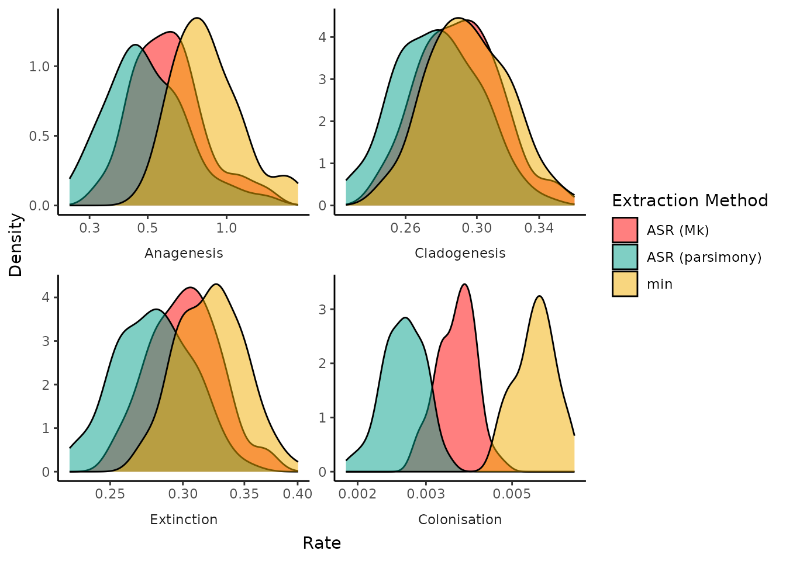
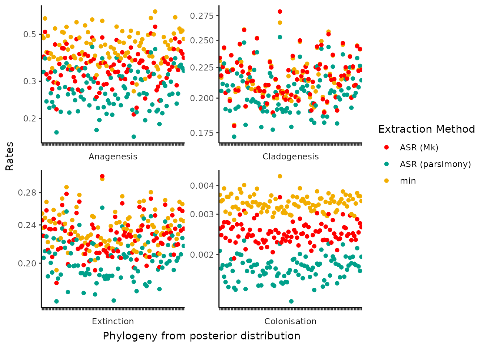
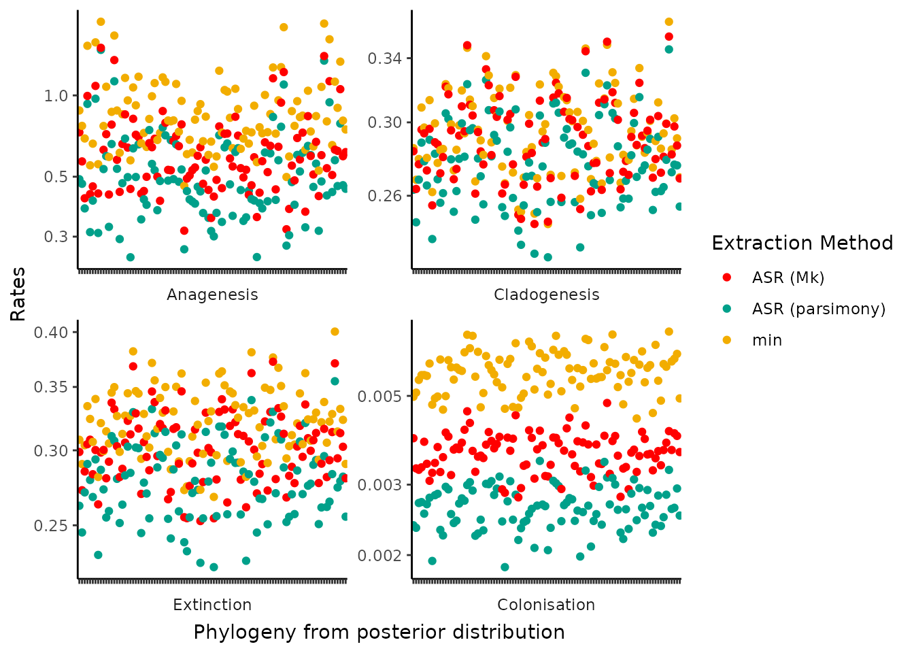

Introduction
In this vignette we provide a set of best practices for sensitivity analyses that should be taken into consideration when conducting data formatting and model fitting in the DAISIE and DAISIEprep framework. Sensitivty analyses is the testing of a model output to variations in the model input. A model is considered sensitive if the model output vastly changes due to relatively small perturbations in the data input into the model. These small perturbations may be due to uncertainty in the data (i.e. a posterior distribution of possible branching times in a phylogeny), measurement error, or other factors. In the case we are interested in, these perturbations are variation in island colonisation and branching times, endemicity status on the island and number of colonisations events. Each of these can change if using multiple phylogenies from the posterior distribution of inferred phylogenies, or using different extraction algorithms in DAISIEprep.
Firstly we discuss thetype of variations in the data and how each of these can impact parameter estimation. Another aspect of sensitivity analysis, which we will not explore in this vignette, is the sensitivity of model selection to input data variation. By this we mean the best-fit model and the ranking of the model (by likelihood, AIC, BIC, or other metric) may change given differences in the data. This can be equally as important as sensitivity of parameter estimates and we recommend users check model selection as well as parameter estimates in their work.
Sensitivity to extraction method
The DAISIEprep R package provides the tools to extract
phylogenetic community data from phylogenetic trees with the endemicity
status of the species assigned to each tip in the phylogeny. However,
there is not a single correct method for extracting the data and thus
DAISIEprep implements several algorithms to account for
variations in what would be considered an appropriate assumptions for
the island system of interest. The two major divisions for extracting
data are in the extraction_method argument in
extract_island_species() (and by extension
extract_multi_island_species()), which can be either
"min" for the minimum time of colonisation algorithm, or
"asr" for the geographical ancestral state reconstruction
algorithm. The "min" algorithm conforms to the assumptions
of the DAISIE inference model (implemented in the DAISIE
R package). These assumptions are:
- Non-endemic species cannot be part of an island clade
- There is no back-colonisation from the island away to the mainland or other island
- There cannot be a species not present on the island nested in an endemic island clade
The all points are linked, by not allowing back-colonisation, a
species on the islands cannot be endemic to the island (i.e. part of an
endemic island radiation) and then migrate or expand its range away from
the island. These three points mean that if the island system of
interest has experienced back-colonisation or a species in an endemic
island radiation has expanded its range off the island and its island
population has gone extinct (making it not present on the island but
extant) the "min" algorithm will split clades into multiple
colonisations. In the case that the island of interest is very remote
and species colonisation and diversify and do not disperse off the
island, this algorithm provides a simple model to extract the data.
However, it is clear that this common assumptions of the DAISIE model
and thus the "min" algorithm are violated in empirical
data. Therefore the second algorithm, "asr", is implemented
to remedy this. The "asr" algorithm uses the reconstructed
states at each node in the phylogeny inferring whether a species is not
present on the island, non-endemic to the island, or endemic to the
island. Using this information the algorithm can traverse the phylogeny
back to the node where the island clade colonised the island. This
algorithm overcomes the limitations of the "min" algorithm
by allowing non-endemic species to be part of island clades (extracting
them as endemic clades for the purposes of applying the DAISIE inference
model), and additionally allowing species that are not present on the
island to be included in data when embedded within an endemic island
clade (this feature is turned on/off with the
include_not_present argument in
extract_island_species()). Therefore, the
"asr" algorithm has benefits when the focal island system
has experienced some species movement from the island to other regions.
However, it is not without limitations, ancestral state reconstruction
models should be interpreted with caution and uncertainty of a species
geographic range deep in the past, near the root of the tree is often
high leading to variability in interpretation of whether a species was
present on the island at the time. The formulation of the ancestral
state reconstruction model is also important, with the transition matrix
between states crucial to plausible results. By default we use a
symmetrical transition structure where species go from not present on
the island, to non-endemic and then to endemic. Without jumps from not
present to endemic and vice versa. This is in line with the reasoning in
the DAISIE model that species that colonise the island do not migrate
their entire mainland population, instead going through a widespread
range, before becoming endemic via cladogenesis or anagenesis on the
island, or extinction of the mainland population.
In this vignette we demonstrate the sensitivity of the parameters
estimated from the DAISIE maximum likelihood inference model to changes
in the algorithm used to extract the data. We apply the
"min" and "asr" algorithms, and within
"asr" we apply two different models of ancestral state
reconstruction: parsimony and continuous-time Markov model (Mk model).
Traditionally, these have been two of the most common methods for
reconstructing ancestral states, for other methods to reconstruct
ancestral ranges see Extending_asr vignette in the
DAISIEprep package.
The data we use for this example is the macro-phylogeny of mammals(Upham et al. 2019) and the island endemicity data of Madagascar (Michielsen et al. 2023). The mammal phylogeny is a global phylogeny containing most mammal species and the Madagascar checklist is the most up-to-date catelog of Madagascars mammal fauna. The phylogeny is constructed from genetic sequences to create the DNA-only phylogeny. Species that are known but for which genetic data is unavailable are inserted into the tree using a polytomy resolving technique which produces the complete phylogeny. We test the sensitivity of estimates for both the DNA-only and complete phylogenies.
The results presented in this vignette are not computing each time
the vignette is rendered due to the large computation time required.
Instead, the analyses are run on a cluster computer and saved in the
package. The analysis script run to produce the results can be found in
the DAISIEprepExtra
package here.
The sensitivity analysis uses the sensitivity() function in
the DAISIEprep package.
The sensitivity() function creates a table of all
possible combination of data extraction settings, given the input
arguments, and this forms our parameter space for the sensitivity
analysis. The phylogenetic trees and island endemicity data is provided
to carry out the extraction and formatting. DAISIEprep uses
the phylo4d class from the phylobase R
package. However, for the sensitivity() function a
phylo object can be provided and all the house-keeping is
taken care of inside the function. The sensitivity()
function loops through each parameter setting and extracts and formats
the data and fit the DAISIE maximum likelihood inference model
(DAISIE::DAISIE_ML_CS()) to the data.
The output produces results for the DNA-only phylogeny and the complete phylogeny. The raw data of parameter estimates for the different parameter settings is tidied into a tibble containing the data we need for both the DNA and complete phylogeny.
sensitivity_data <- DAISIEprep:::read_sensitivity()We can plot the distribution of parameter estimates for the DNA and complete data sets.
DAISIEprep:::plot_sensitivity(
sensitivity_data = sensitivity_data$sensitivity_dna
)
DAISIEprep:::plot_sensitivity(
sensitivity_data = sensitivity_data$sensitivity_complete
)
Most parameters are relatively unsensitivite to the different
phylogenies across the posterior distribution of possible trees. The
noticable outlier is colonisation rate, where the choice of extraction
algorithm heavily influences the inferred rate of island colonisation.
The "min" algorithm shows the highest rate of colonisation,
likely due to breaking up island clades that may have undergone some
back-colonisation. The smallest estimated colonisation rate comes from
the "asr" algorithm using parsimony to reconstruct the
geographical states in the phylogeny. This can be explained by parsimony
favouring the fewest number of state changes (i.e. range shifts from
mainland to island), which translates into fewer colonisation events and
likely lumping clades together which may have independently colonised
the island.
An alternative plot is to look at the pairwise comparisons of each estimated rate from the DAISIE inference model across each posterior phylogeny.
DAISIEprep:::plot_sensitivity(
sensitivity_data = sensitivity_data$sensitivity_dna,
pairwise_diffs = TRUE
)
DAISIEprep:::plot_sensitivity(
sensitivity_data = sensitivity_data$sensitivity_complete,
pairwise_diffs = TRUE
)
The general pattern is the same as the density plots shown above. The rates of cladogenesis, anagenesis and extinction are largely clusters with little clear separation of estimates by extraction method. The exception is again colonisation rate which shows visible clustering of rate estimates based on which extraction method is chosen.
Here we have demonstrated the variability, or lack of, in parameter estimates from phylogenetic data on an island community when changing the data as well as the choice of extraction algorithm.